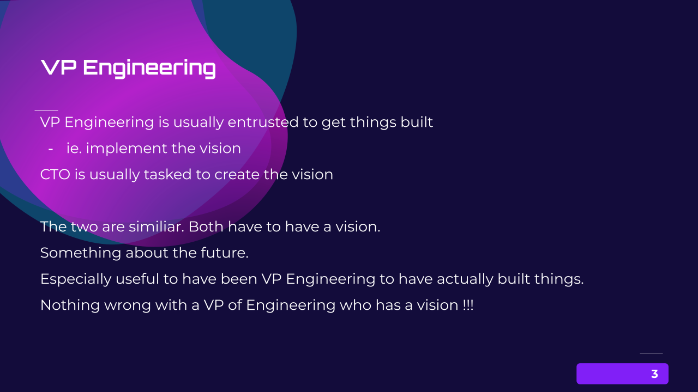
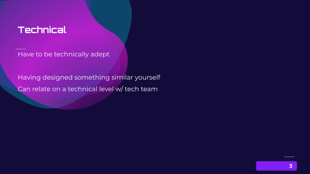
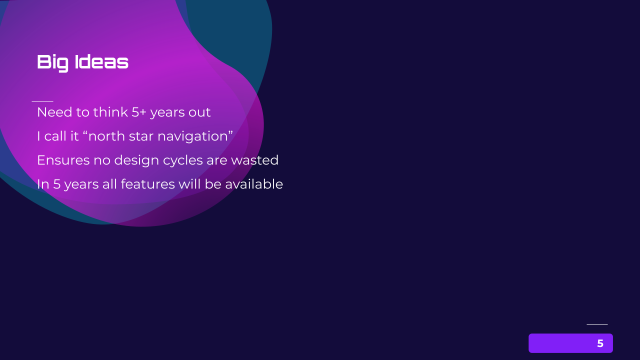
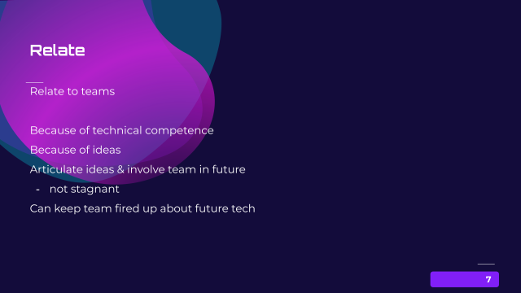
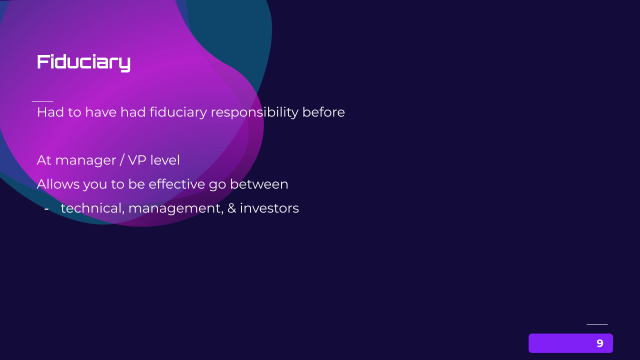
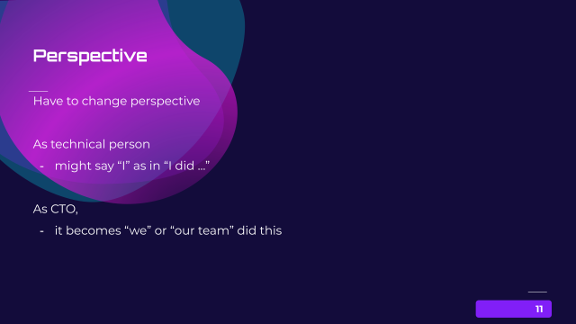
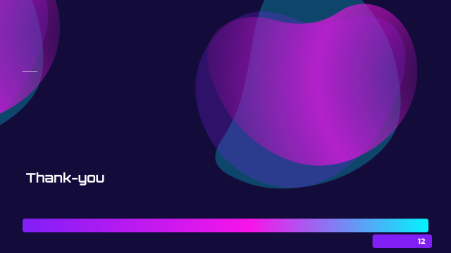

Summary of Video:
Rich Budek
Thoughts on CTO
Rich Budek
Thoughts on CTO - VP Engineering

VP Engineering is usually entrusted to get things built
ie. implement the vision
CTO is usually tasked to create the vision
The two are similiar. Both have to have a vision.
Something about the future.
Especially useful to have been VP Engineering to have actually built things.
Nothing wrong with a VP of Engineering who has a vision !!!
Technical

Technical
Have to be technically adept
Having designed something similar yourself
Can relate on a technical level w/ tech team
Big Ideas

Big Ideas
Need to think 5+ years out
I call it "north star navigation"
Ensures no design cycles are wasted
In 5 years all features will be available
Relate

Relate
Relate to teams
Because of technical competence
Because of ideas
Articulate ideas & involve team in future
- not stagnant
Can keep team fired up about future tech
Fiduciary

Fiduciary
Had to have had fiduciary responsibility before
At manager / VP level
Allows you to be effective go between
- technical, management, & investors
Perspective

Perspective
Have to change perspective
As technical person
- might say "I" as in "I did ... "
As CTO,
- it becomes "we" or "our team" did this
